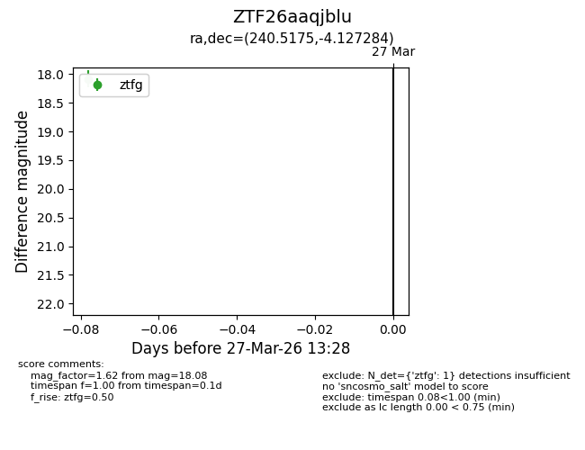
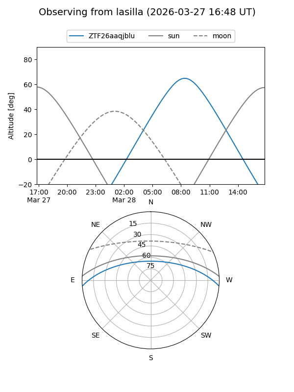
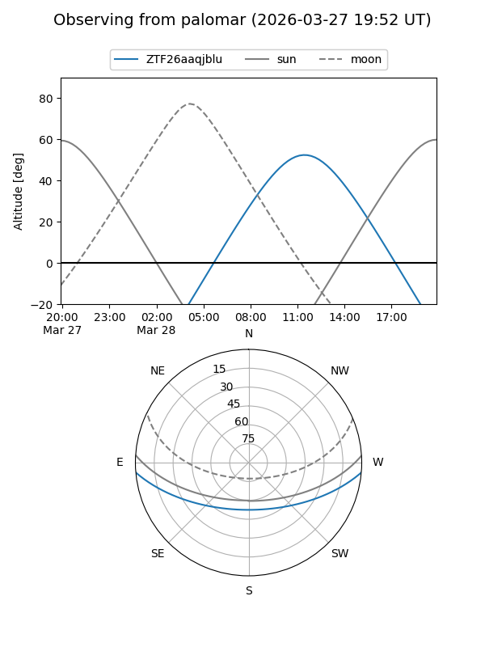

ZTF26aaqjblu
Target ZTF26aaqjblu at 2026-03-27 13:30
Aliases and brokers:
FINK: link
Lasair: link
ALeRCE: link
alt names
ZTF26aaqjblu (ztf,fink_ztf)
Coordinates:
equatorial (ra, dec) = 240.5175,-4.12728
equatorial (HMS+DMS) = 16:02:04.21,-04:07:38.22
galactic (l, b) = (6.2565,+34.40798)
Flags:
Photometry:
last ztfg=18.08
1 ztfg detections
Lightcurve

Visibility


Additional plots